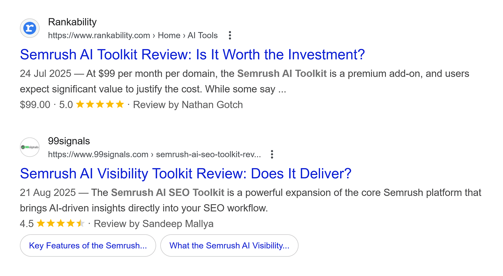

一、媒体合作可能有效，但不是捷径
跟媒体合作能提升AI可见性，但前提很具体：媒体内容必须能帮助AI确认品牌实体、能力边界和可信证据。只要是重复通稿，就不能自动变成AI答案里的推荐理由。
现有公开研究和行业观察都指向同一个方向：AI答案会综合品牌自有来源与第三方来源。媒体合作的价值，在于让第三方以更可信的方式补充官网信息。
二、研究结论应该怎么理解
一些研究会统计AI答案中的引用来源类型，也会讨论品牌自有来源和第三方来源的占比。企业阅读这类数据时，要注意样本、行业、问题类型和测试时间的限制。
这些数据不能直接推出“发媒体稿就会提升排名”。更稳妥的理解是：AI确实会利用多种来源形成答案，因此品牌需要管理官网内容，也需要建设可信外部信号。
| 合作类型 | 可能价值 | 主要限制 |
|---|---|---|
| 新闻通稿 | 发布标准事实 | 容易重复和模板化 |
| 媒体采访 | 补充观点和背景 | 需要真实信息密度 |
| 第三方评测 | 提供比较和体验 | 标准必须透明 |
| 行业案例 | 证明具体场景 | 不能夸大结果 |
三、什么样的媒体内容更可能被AI采用

更可能被采用的媒体内容通常有三个特点：独立信息、清楚结构、可追溯事实。它不只是重复企业自我介绍，而是提供采访、评测、案例、行业语境或专家解释。
AI需要用这些信息降低推荐风险。一个能说明“为什么这家公司适合某类用户”的报道，比一篇只说“重磅发布”的稿件更容易进入决策型答案。
四、无效媒体合作通常长什么样
无效合作往往有几个共同点：稿件高度重复，标题夸张，事实很少，页面质量低，品牌类别写得不一致，或者发布后很快失效。这些内容很难成为可靠来源。
更糟的是，它们可能让AI形成错误印象。比如把短期活动写成长期能力，把试点客户写成成熟案例，把计划中的功能写成已经上线。
- 只改标题不改正文的批量转载。
- 没有作者、日期、来源或编辑责任的页面。
- 无法核验的行业地位和客户成果。
- 与官网定义冲突的品牌类别或产品描述。
五、媒体合作前要先整理品牌材料
媒体合作不是从写稿开始，而是从事实整理开始。企业应该准备标准品牌介绍、产品说明、案例事实、数据口径、客户适用场景和不可夸大的边界。
这些资料越清楚，媒体越容易写出有信息增量的内容。它们也能降低外部报道与官网表述冲突的概率。
六、合作后如何判断是否提升AI可见性
可以用同一组问题观察合作前后的变化：AI是否更常提到品牌，是否引用媒体内容，是否更准确地描述产品，是否在对比问题中给出更清楚的推荐理由。
同时要记录引用语境。被引用不等于被推荐，如果AI只是把媒体稿放在来源列表里，却没有认可品牌能力，这种价值要谨慎计算。
七、结论：媒体合作要服务证据链
媒体合作可以提升AI可见性，但它提升的不是神秘权重，而是品牌在外部信息环境中的可验证程度。高质量媒体内容会让AI更容易相信官网自我定义。
企业应把媒体合作放进GEO证据链，而不是当作一次性投放。只有当媒体内容能带来新的事实、清楚的语境和长期可访问页面，它才值得投入。
参考文献
- Yext Research：AI citations from brand-managed sources -https://investors.yext.com/news-events/press-releases/detail/376/yext-research-86-of-ai-citations-come-from-brand-managed
- Semrush：The Ghost Citations Study -https://www.semrush.com/blog/the-ghost-citations-study/
- Google Search Central：Creating helpful, reliable, people-first content -https://developers.google.com/search/docs/fundamentals/creating-helpful-content
- Google Search Central：AI features and your website -https://developers.google.com/search/docs/appearance/ai-features
- Microsoft Learn：RAG and Generative AI in Azure AI Search -https://learn.microsoft.com/en-us/azure/search/retrieval-augmented-generation-overview
FAQ
Q1：媒体合作一定能提升AI可见性吗？
不能保证。媒体合作只有在提供可信第三方信号时才有帮助，例如独立采访、评测、案例或行业解释。批量转载通稿可能增加曝光，却不一定让AI更信任品牌。企业应把媒体合作视为证据建设，而不是捷径，并复盘答案语境变化。
Q2：研究里的引用占比可以直接用于我的行业吗？
不能直接套用。公开研究通常有自己的样本、问题集、时间和平台范围，不同行业的AI引用来源差异很大。企业可以把研究当作方向提示：AI会使用多类来源；真正的判断仍要回到自身品牌的问题集和答案样本，避免误用统计结论。
Q3：媒体报道和官网内容哪个更重要？
两者承担不同角色。官网负责权威定义，说明品牌是谁、产品是什么、边界在哪里；媒体负责外部印证，帮助AI判断这些说法是否被第三方确认。只有官网清楚、媒体一致，两者才会共同提升AI可见性，并减少外部误读和来源冲突。
Q4：什么样的媒体内容最值得做？
优先做有信息增量的内容，比如深度采访、产品评测、客户案例、行业方法讨论和可解释榜单。这些内容能回答“为什么可信”和“适合谁”。只重复发布会信息或品牌口号的稿件，对AI理解帮助有限，也难以支持推荐判断。
Q5：被媒体引用后为什么AI仍然不推荐我？
被引用只是进入材料层，不代表进入推荐层。AI还会判断品牌是否匹配用户场景、证据是否充分、风险是否可接受，以及竞争对手是否更清楚。媒体引用有帮助，但还需要官网内容、案例证据和用户问题覆盖共同支撑，才能形成推荐理由。
Q6：媒体合作的效果应该如何复盘？
复盘时不要只看阅读量和发布数量。应观察AI答案中品牌提及、来源引用、描述准确性、语气、推荐位置和竞品对比变化。最好在合作前建立基线，合作后持续观察同一组问题，这样才知道变化是否与内容有关，还是普通波动。